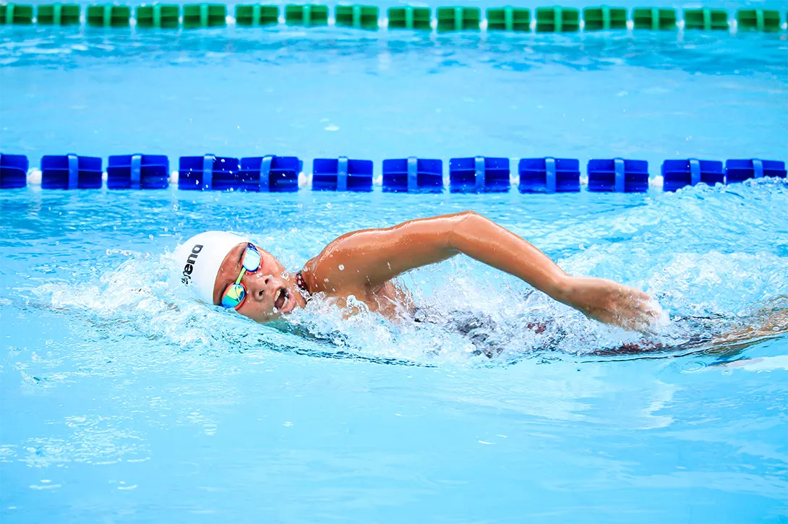

Should You Take A Break From Squash In The Summer?
Yes. it’s that simple. If you play competitive squash during the winter, then a summer break from squash is not only a good idea, it might even be necessary!
Personally, I prefer summer squash. No, seriously. I hate the cold. I love how the ball bounces and how the game becomes very different tactically from the winter months. But that’s not the issue, is it? The issue is whether taking a break from squash is a good idea and I truly believe it is. Does it have to be in the summer? No, I suppose not, but for most people that is the best time. What’s important is to get away from the court and clear your head.
There is a saying in English: “A change is as good as a rest“. This means that if you do something significantly different from your usual routine, then that might be as beneficial as actually resting. A lot depends on your usual routine and what you are doing differently, but for squash players, that could mean playing a different racket sport, or leaving rackets behind all together.
Who doesn’t love swimming in the summer? Me, I freaking hate swimming! But I recognise the benefits.
The summer offers plenty of opportunity to do different sports and the most obvious is swimming. Where I live, The Basque Country, most places have an outdoor swimming pool that is open between 15th June and 15th September. In my town, the cost is included in the membership of the sports centre anyway and it can be fun to exercise outside. Maybe you are not that lucky, but if you look around I am sure you can find some exercise that is cheap and will make a nice change from squash.
Two more points to make. Firstly, doing some different exercise might give your body a chance to recover from a tough season. Even professionals take breaks in the summer because you can’t play your best squash all year round. It’s not possible. There have been many stories of people finally getting rid of long-term injuries during the pandemic. Yes!, that’s not really what we wanted, but resting your body is more important than most amateurs realise.
Secondly, not only does the body need a break, the mind does too. I’m not saying take 3 months off from squash, but 3 weeks away from the court is a good thing. Some players use the summer to learn new racket skills and that’s a great thing to do too, but don’t try to learn too many new skills each summer.
Final Thoughts
To summarise (get it? summer!), I recommend taking 3 weeks away from the court if you play competitive winter squash. Give your body AND mind a chance to rest. If you want to stay active, then choose something with low-risk and high-enjoyment.
Continue Reading
• Previous: What Is Frontenis?
• Next: Vintage Squash Racket Day
• Random: Take A Chance!
• Popular: Why Do Pro Squash Players Rally To The Back So Much?